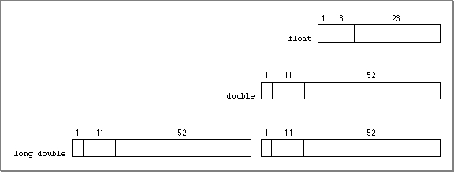

Legacy Document
Important: The information in this document is obsolete and should not be used for new development.
Important: The information in this document is obsolete and should not be used for new development.


Floating-Point Data Formats
Figure E-1
Table E-1 Interpreting floating-point values If biased
exponent e is:And fraction f is: Then value v is: And class of v is: (any) [73] FP_NORMAL [74] FP_SUBNORMAL FP_ZERO FP_INFINITE FP_SNAN(first bit is 0)FP_QNAN(first bit is 1)Floating-point data formats
Table E-2 Class and sign inquiry macros fpclassify(x) isnormal(x) isfinite(x) isnan(x) signbit(x) 
[72] max = 255 forfloat; 2047 fordoubleandlong double.
[73] Forlong doubleboth head and tail are evaluated this way and added together.
[74] minexp = -126 forfloat; -1022 fordoubleandlong double.